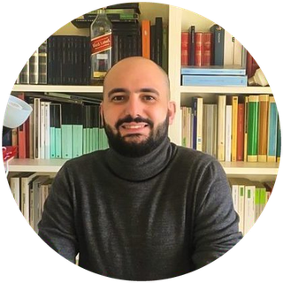

I teach Italian and history in a Milan upper secondary school, and I train teachers in the classroom use of artificial intelligence1. I hold a master’s in public history2 and a doctorate in Romance philology3, and I build websites and web applications4. They are four trades doing a single job: putting people in a position to understand a text – whether it is a clandestine newspaper from 1944, an archival source or a machine’s answer. School as civic infrastructure is the subject I work on outside the classroom too5; the full path, with dates, is in the profile6.
The superscript numbers point to the notes below: they are the six pages of the site. The three service pages – everything, curriculum, archive – are in the top row and at the foot, and are in Italian.
The service pages have no note because they are not a trade: Everything is the chronological index of what I have done, the curriculum is the numbered version with the dates, also downloadable as a PDF, and the archive holds the pieces published here since 2012, at the addresses they always had. The last two are in Italian only. The Italian version of the site is here.